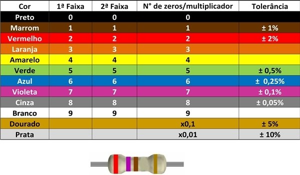

<h2 class="tm-pt-30 tm-color-primary tm-post-title">
  Aula Extra 01 - 06/06/2024
</h2>
<h2 class="tm-pt-30 tm-color-primary tm-post-title">Código Resistores</h2>

<p>Vamos aproveitar para falarmos do código de cores de resistores.</p>
<a href="Arquivos/img/CodigoResistores.jpg" target="_blank">
  </a>
